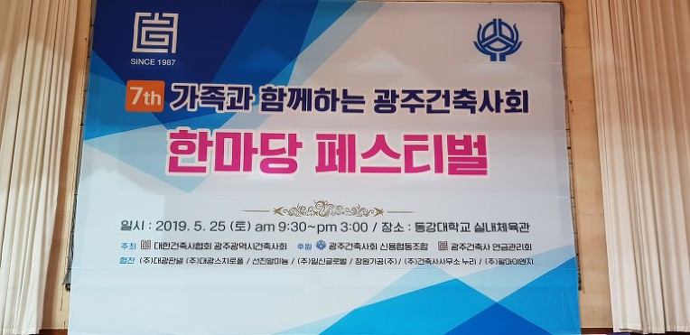
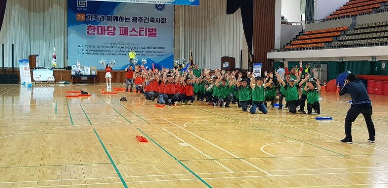
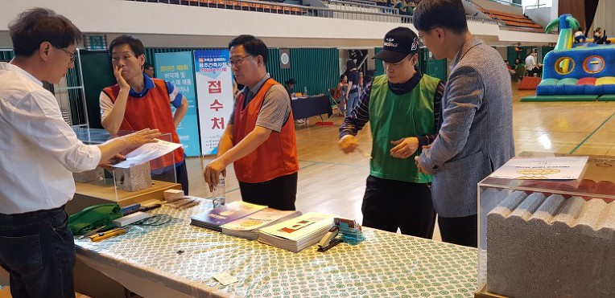
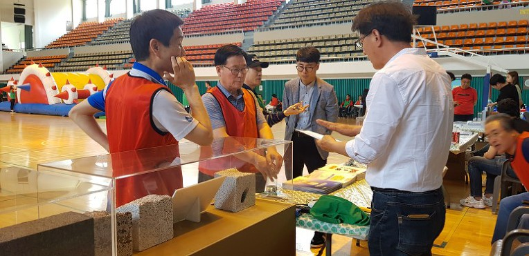
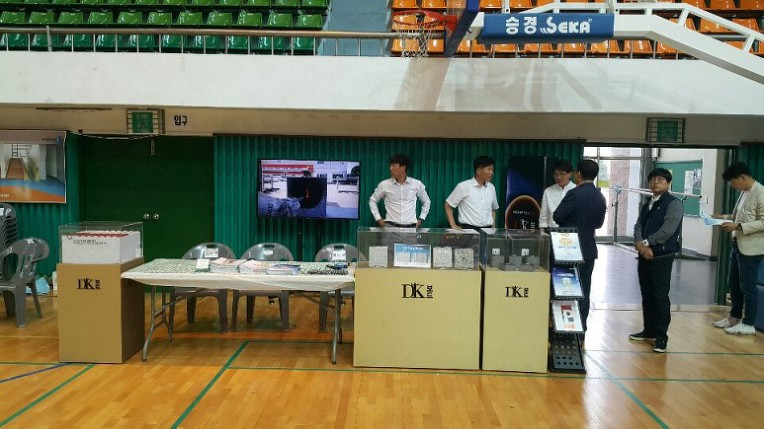

대광판넬 본사 · 광주공장은 광주동강대학교 실내체육관에서 개최된 '제7회 가족과 함께하는 광주건축사회 한마당 페스티벌'에 협찬사로 함께하였습니다.

이날 행사를 주관한 광주건축사회에서는 대광판넬의 우수한 제품을 소개하는 자리를 마련해주셔서 더욱 뜻깊은 시간이 되었는데요~~
많은 건축사님들께서 'eps 준불연 DK보드 판넬'에 아주 많은 관심을 가져주셔서 정말 알찬시간이었습니다 ㅎ ~~ ^^


특히 지속적으로 확산되고있는 불량 건축자재에 대한 깊은 우려를 표하시면서, 정직하고 안전한 건축자재가 시장에서 인정받을 수 있도록 함께 노력하자는 따뜻한 격려의 응원도 잊지 않으셨습니다~ 흑흑 정말 감사합니다 !! ㅜㅜ ^^
오늘은
건축사님들과 함께 한
아리아리~한
하루였네요 ^^
※'아리아리'란 길이 없으면 만들어서라도 나아가자는 뜻으로 '파이팅' 대신 쓰는 말입니다.